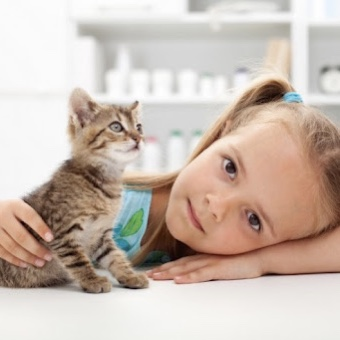

Why adopting a pet?
Adopting pets is important because it saves lives and reduces animal overpopulation. It provides companionship, improves mental health, and can be more affordable than buying from breeders. Adoption also promotes responsible pet ownership and supports local shelters. Additionally, it allows people to find unique companions that match their lifestyles. Overall, adopting enriches both the lives of animals and their owners.
By Maria Florencia Albornoz
If you are planning in giving them a second life
The happiness of owning a pet
Nothing compares to the joy of coming home to a loyal companion. The unconditional love of a pet can do more than keep you company. Pets may also decrease stress, improve heart health, and even help children with their emotional and social skills.
Research on human-animal interactions is still relatively new. Some studies have shown positive health effects, but the results have been mixed.
Interacting with animals has been shown to decrease levels of cortisol and lower blood pressure. Other studies have found that animals can reduce loneliness, increase feelings of social support, and boost your mood.


Benefits
The benefits of having a pet walking through your hallway or lounging on your couch are numerous. Here are some of them:
Emotional Benefits
They help combat depression and loneliness, as their presence encourages physical contact and communication. In situations like lockdowns, pets have served as true emotional support for their owners.
Stress-Relief Benefits
They help keep stress at bay. Those who live with dogs tend to exercise more by taking them for walks, and various studies show that the calm nature of cats can reduce anxiety. Additionally, their purring produces a vibration considered relaxing.
Educational Benefits
For young children, taking on responsibilities related to a pet is incredibly educational: it teaches them to care for a living being, maintain certain routines, and be more disciplined, instilling values like empathy and respect.
Social Benefits
Having a dog not only provides the chance to exercise outdoors but also helps socialize with other dog owners. For elderly people, many of whom live alone, having a dog is very positive as it fosters connections with others.
Animals Helping People
Animals can serve as a source of comfort and support. Therapy dogs are especially good at this. They’re sometimes brought into hospitals or nursing homes to help reduce patients’ stress and anxiety.